전자기기기능사 (2015-01-25 기출문제)
1과목: 전기전자공학
1. 다이오드-트랜지스터 논리회로(DTL)의 특징이 아닌 것은?
- 소비전력이 적다.
- 잡음여유도가 크다.
- 응답속도가 비교적 빠르다.
- 저속도 및 중속도에서 동작이 안정하다.
(정답률: 55%)

2. 전동기에서 전기자에 흐르는 전류와 자속, 회전방향의 힘을 나타내는 법칙은?
- 렌츠의 법칙
- 플레밍 왼손 법칙
- 플레밍 오른손 법칙
- 앙페르의 오른손 법칙
(정답률: 80%)
3. 이미터 접지회로에서 IB = 10[㎂], IC = 1[㎃] 일 때 전류 증폭률 β 는 얼마인가?
- 10
- 50
- 100
- 120
(정답률: 69%)
4. 5[㎌]의 콘덴서에 1[kV]의 전압을 가할 때 축적되는 에너지[J]는?
- 1.5[J]
- 2.5[J]
- 5.5[J]
- 10[J]
(정답률: 75%)
5. 펄스 증폭회로의 설명으로 틀린 것은?
- 저역특성이 양호하면 새그가 감소한다.
- 결합콘덴서를 크게 하면 새그가 감소한다.
- 고역특성이 양호하면 입상의 기울기가 개선된다.
- 고역보상이 지나치면 언더슈트가 발생한다.
(정답률: 69%)
6. 이상적인 연산증폭기의 주파수 대역폭으로 가장 적합한 것은?
- 0 ~ 100 [kHz]
- 100 ~ 1000 [kHz]
- 1000 ~ 2000 [kHz]
- 무한대(∞)
(정답률: 84%)
7. 9[㎌]의 같은 콘덴서 3개를 병렬로 접속하면 콘덴서의 합성용량은?
- 3[㎌]
- 9[㎌]
- 27[㎌]
- 81[㎌]
(정답률: 86%)
8. TR을 A급 증폭기(활성영역)로 사용할 때 바이어스 상태를 옳게 표현한 것은?
- B-E : 순방향 Bias, B-C : 순방향 Bias
- B-E : 역방향 Bias, B-C : 역방향 Bias
- B-E : 순방향 Bias, B-C : 역방향 Bias
- B-E : 역방향 Bias, B-C : 순방향 Bias
(정답률: 79%)
9. 자체 인덕턴스가 10[H]인 코일에 1[A]의 전류가 흐를 때 저장되는 에너지는?
- 1[J]
- 5[J]
- 10[J]
- 20[J]
(정답률: 61%)
10. 연산 증폭기의 설명으로 틀린 것은?
- 직렬 차동 증폭기를 사용하여 구성한다.
- 연산의 정확도를 높이기 위해 낮은 증폭도가 필요하다.
- 차동 증폭기에서 TR 특성의 불일치로 출력에 드리프트가 생긴다.
- 직류에서 특정 주파수 사이의 되먹임 증폭기를 구성, 일정한 연산을 할 수 있도록 한 직류 증폭기이다.
(정답률: 70%)
11. 진공관에서 음극 표면의 상태가 고르지 못해 전자의 방사가 시간적으로 일정하지 않아 발생하는 잡음으로 가청 주파수대에서만 일어나는 잡음은?
- 열잡음
- 산탄 잡음
- 플리커 잡음
- 트랜지스터 잡음
(정답률: 73%)
12. N형 반도체를 만드는 불순물은?
- 붕소(B)
- 인듐(In)
- 갈륨(Ga)
- 비소(As)
(정답률: 78%)
13. 주파수 변조 방식에 대한 설명으로 가장 적합한 것은?
- 반송파의 주파수를 신호파의 크기에 따라 변화 시킨다.
- 신호파의 주파수를 반송파의 크기에 따라 변화 시킨다.
- 반송파와 신호파의 위상을 동시에 변화 시킨다.
- 신호파의 크기에 따라 반송파의 크기를 변화 시킨다.
(정답률: 52%)
14. 다음 회로에서 공진을 하기 위해 필요한 조건은?
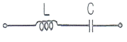
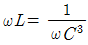
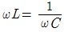
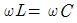
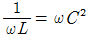
(정답률: 86%)
15. 평활회로의 출력 전압을 일정하게 유지시키는데 필요한 회로는?
- 안정화(정전압)회로
- 브리지정류회로
- 전파정류회로
- 정류회로
(정답률: 85%)
2과목: 전자계산기일반
16. 다음 연산증폭기 회로에서 Z = 50[kΩ], Zf = 500[kΩ] 일 때 전압증폭도(AVf)는?
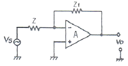
- 0.5
- -0.5
- 10
- -10
(정답률: 58%)
17. 읽기 전용 메모리로서 전원이 끊어져도 기억된 내용이 소멸되지 않는 비휘발성 메모리는?
- ROM
- I/O
- control Unit
- register
(정답률: 86%)
18. 마이크로프로세서(Microprocessor)를 이용하여 컴퓨터를 설계할 때의 장점이 아닌 것은?
- 소비전력의 증가
- 제품의 소형화
- 시스템 신뢰성 향상
- 부품의 수량 감소
(정답률: 80%)
19. 데이터를 중앙처리장치에서 기억장치로 저장하는 마이크로명령어는?
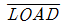
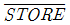
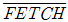
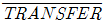
(정답률: 82%)
20. 서브루틴의 복귀 주소(Return Address)가 저장되는 곳은?
- Stack
- Program Counter
- Data Bus
- I/O Bus
(정답률: 74%)
21. 다음 C 프로그램의 실행 결과는?
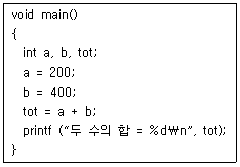
- tot
- 600
- 두 수의 합 = 600
- 두 수의 합 = tot
(정답률: 86%)
22. 마이크로프로세서에서 누산기(accumulator)의 용도는?
- 연산 결과를 일시적으로 삭제
- 오퍼레이션 코드를 인출
- 오퍼레이션의 주소를 저장
- 연산 결과를 일시적으로 저장
(정답률: 88%)
23. 플립플롭으로 구성되는 레지스터는 어떤 기능을 수행하는가?
- 기억
- 연산
- 입력
- 출력
(정답률: 74%)
24. 자료의 단위가 작은 크기에서 큰 크기순으로 나열된 것은?
- 니블<비트<바이트<워드<풀워드
- 비트<니블<바이트<하프워드<풀워드
- 비트<바이트<하프워드<풀워드<니블
- 풀워드<더블워드<바이트<니블<비트
(정답률: 74%)
25. 명령어의 오퍼랜드 부분과 프로그램카운터의 내용이 더해져 실제 데이터의 위치를 찾는 주소지정방식을 무엇이라 하는가?
- 직접주소 지정 방식
- 간접주소 지정 방식
- 상대주소 지정 방식
- 레지스터주소 지정 방식
(정답률: 52%)
26. 컴퓨터의 주변장치에 해당되는 것은?
- 연산장치
- 제어장치
- 주기억장치
- 보조기억장치
(정답률: 78%)
27. 코드 내에 패리티 비트(parity bit)가 있어 전송 시에 오류 검사가 가능한 코드는?
- ASCII 코드
- gray 코드
- EBCDIC 코드
- BCD 코드
(정답률: 61%)
28. 2진수 (11001)2에서 1의 보수는?
- 00110
- 00111
- 10110
- 11110
(정답률: 85%)
29. 측정자의 부주의에 의하여 발생하는 것으로서 측정기의 눈금을 잘못 읽거나, 부정확한 조정, 부적당한 적용 및 계산의 실수 등에 의하여 발생하는 오차는?
- 개인오차
- 계통오차
- 우연오차
- 측정오차
(정답률: 81%)
30. 볼로미터(bolometer) 전력계의 저항 소자는?
- 서미스터
- 바리스터
- 트랜지스터
- 터널 다이오드
(정답률: 70%)
3과목: 전자측정
31. 표준 저항기의 실효 저항을 R, 실효 인덕턴스를 L이라 했을 때 시상수를 나타내면?
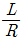
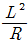
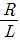
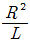
(정답률: 77%)
32. 전력 증폭기에서 저항을 측정하는 이유로 옳은 것은?
- 전력 이득을 계산하기 위해서
- 전압 이득을 계산하기 위해서
- 부하 저항과의 정합을 이루기 위하여
- 주파수 응답 특성을 알기 위하여
(정답률: 52%)
33. 오실로스코프로 다음과 같은 도형이 얻어졌다. 이 회로의 위상은?
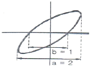
- 10°
- 20°
- 30°
- 40°
(정답률: 73%)
34. 지시 계기의 3대 요소에 해당되지 않는 것은?
- 구동 장치
- 지시 장치
- 제동 장치
- 제어 장치
(정답률: 75%)
35. 디지털 측정에 널리 이용되는 샘플홀드회로(sample-hold circuit)에 대한 설명 중 틀린 것은?
- A/D 변환기와 함께 사용된다.
- 스위치와 콘덴서로 간단히 실현할 수 있다.
- 홀드 모드 동안에는 하나의 연산증폭기이다.
- 샘플 모드 동안에는 콘덴서에 전하를 방전한다.
(정답률: 56%)
36. 편위법을 이용한 기록계기는?
- 타점식 기록계기
- 펜식 기록계기
- 브리지형 기록계기
- 자동평형식 기록계기
(정답률: 50%)
37. 일반적으로 지시계기의 구비 조건 중 옳은 것은?
- 절연내력이 낮아야 한다.
- 눈금이 균등하든가 대수 눈금이어야 한다.
- 확도가 낮고, 외부의 영향을 받지 않아야 한다.
- 지시가 측정값의 변화에 불확정 응답이어야 한다.
(정답률: 62%)
38. 주파수 특성측정에 사용되는 발진기로 소요 주파수 대역 내에서 발진 주파수가 자동적으로 걸려 연속적으로 변화하는 발진기는?
- 비트 발진기
- LC 발진기
- 음차 발진기
- 소인 발진기
(정답률: 57%)
39. [보기]의 계기와 관련 있는 측정계기는?
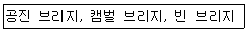
- 고주파수 측정계기
- 반송 주파수 측정계기
- 상용 주파수 측정계기
- 가청 주파수 측정계기
(정답률: 62%)
40. 기본파의 전압이 40[V]이고, 고조파의 전압이 80[V]라 하면 이때의 일그러짐율은 약 몇 [dB]인가?(오류 신고가 접수된 문제입니다. 반드시 정답과 해설을 확인하시기 바랍니다.)
- -3[dB]
- -6[dB]
- 3[dB]
- 6[dB]
(정답률: 44%)
41. 서보기구에 사용되지 않는 것은?
- 싱크로
- 차동변압기
- 리졸버
- 단상전동기
(정답률: 61%)
42. 수신기에서 주파수 다이버시티(frequency diversity)의 주된 사용 목적은?
- 페이딩(fading) 방지
- 주파수 편이 방지
- S/N저하 방지
- 이득저하 방지
(정답률: 71%)
43. 비디오 신호를 기록, 재생하는 장치로 해상도나 화상의 아름답기를 결정하는 성능에서 매우 중요한 부분은?
- 비디오 헤드
- 헤드 드럼
- 비디오테이프
- 로딩 기구
(정답률: 74%)
44. VTR의 컬러 프로세스(color process)의 VHS 방식에서 사용하고 있는 색 신호 처리방식은?
- DOS 방식
- HPF2 방식
- PS(phase shift) 방식
- PI(phase invert) 방식
(정답률: 70%)
45. 다음 의용전자 장치 중 치료에 이용되는 것은?
- 오디오미터
- 심전계
- 망막 전도 측정기
- 심장용 페이스메이커
(정답률: 67%)
4과목: 전자기기 및 음향영상기기
46. 태양전지의 용도가 아닌 것은?
- 조도계나 노출계
- 인공위성의 전원
- 광전자 방출 효과
- 초단파 무인 중계국
(정답률: 56%)
47. 선박에 이용되며 방향 탐지기가 없이 보통 라디오 수신기를 이용하여 방위를 측정할 수 있는 것은?
- 회전 비컨
- 무지향성 비컨
- AN 레인지 비컨
- 초고주파 전방향성 비컨
(정답률: 60%)
48. 공항에 수색레이더(SRE)와 정측레이더(PAR)의 두 레이더가 설치된 항법 보조 장치는?
- ILS 장치
- 고도측정 장치
- 거리측정 장치
- 지상제어 진입 장치(GCA)
(정답률: 61%)
49. 스피커의 감도 측정에 있어서 표준 마이크로폰이 받는 음압이 4[μbar]이면 스피커의 전력 감도는?(단, 스피커의 압력에는 1[W]를 가한 것으로 한다.
- 약 9[dB]
- 약 12[dB]
- 약 16[dB]
- 약 20[dB]
(정답률: 56%)
50. 녹음기에서 테이프를 일정한 속도로 움직이게 하는 것은?
- 핀치 롤러와 캡스턴
- 핀치 롤러와 텐션암
- 캡스턴과 테이프 가이드
- 테이프 가이드와 테이프 패드
(정답률: 74%)
51. FM 변조에서 변조지수가 6 이고, 신호주파수가 3[kHz] 일 때, 최대 주파수 편이는?
- 6[kHz]
- 9[kHz]
- 18[kHz]
- 36[kHz]
(정답률: 73%)
52. 다음 회로의 전달함수는?
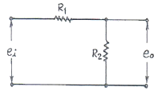
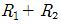
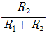
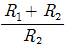
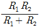
(정답률: 61%)
53. 광학 현미경과 전자 현미경의 차이점에 대한 설명으로 가장 옳은 것은?
- 광학 현미경에서는 시료 위의 정보를 전하는 매개체로 빛과 전자를 동시에 사용한다.
- 광학 현미경은 매개체로 빛과 광학렌즈를, 전자 현미경은 매개체로 전자 빔과 전자렌즈를 사용한다.
- 전자 현미경은 전자선을 오목렌즈에 이용하고, 광학 현미경은 볼록렌즈를 사용한다.
- 전자 현미경은 볼록렌즈에 전자선을 사용하고, 광학 현미경은 오목렌즈에 전자선을 이용한다.
(정답률: 72%)
54. 60[Hz] 4극 3상 유도전동기의 동기속도는?
- 1200[rpm]
- 1800[rpm]
- 2400[rpm]
- 3600[rpm]
(정답률: 60%)
55. 무선기기의 음성신호 표본화 주파수를 8[kHz]를 사용할 경우 채널이 두 개일 때 펄스 간격 T는 얼마인가?
- 62.5[μsec]
- 125[μsec]
- 250[μsec]
- 500[μsec]
(정답률: 51%)
56. 수평해상도 340, 수직해상도 350인 경우 해상비(resolution ratio)는?
- 0.49
- 0.76
- 0.83
- 0.97
(정답률: 71%)
57. 소나의 원리 응용과 거리가 먼 것은?
- 측심기
- 어군탐지기
- 액면계
- 수중레이더
(정답률: 74%)
58. 슈퍼헤테로다인 수신기에서 중간 주파 증폭을 하는 이유 중 옳지 않은 것은?
- 안정한 증폭으로 이득을 높이기 위해
- 전압 변동을 적게 하기 위해
- 충실도를 높이기 위해
- 선택도를 높이기 위해
(정답률: 43%)
59. 다음 중 유전가열이 이용되지 않는 것은?
- 목재의 건조
- 고주파 치료기
- 고주파 납땜
- 비닐제품 접착
(정답률: 57%)
60. 다음 중 전자기기에 사용되는 평판디스플레이의 동작 방식이 발광형인 것은?
- ECD(전자변색 디스플레이)
- LCD(액정 디스플레이)
- TBD(착색입자 회전형 디스플레이)
- FED(전계방출 디스플레이)
(정답률: 54%)